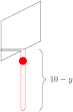
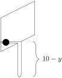
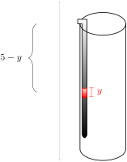
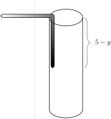
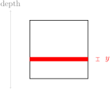

Section 7.1 Work
Subsection 7.1.1 Work
While computing areas and volumes are nice mathematical applications of integration we can also use integration to compute quantities of importance in physics and statistics. One such quantity is work. Work is a way of quantifying the amount of energy that is required to act against a force 1 . In SI 2 metric units the force \(F\) has units newtons (which are kilogram-metres per second squared), \(x\) has units metres and the work \(W\) has units joules (which are newton-metres or kilogram-metres squared per second squared).
Definition 7.1.1.
The work done by a force \(F(x)\) in moving an object from \(x=a\) to \(x=b\) is
In particular, if the force is a constant, \(F\text{,}\) independent of \(x\text{,}\) the work is \(F\cdot(b-a)\text{.}\)
Here is some motivation for this definition. Consider a particle of mass \(m\) moving along the \(x\)-axis. Let the position of the particle at time \(t\) be \(x(t)\text{.}\) The particle starts at position \(a\) at time \(\alpha\text{,}\) moves to the right, finishing at position \(b \gt a\) at time \(\beta\text{.}\) While the particle moves, it is subject to a position-dependent force \(F(x)\text{.}\) Then Newton's law of motion 3 says 4 that force is mass times acceleration
Now consider our definition of work above. It tells us that the work done in moving the particle from \(x=a\) to \(x=b\) is
However, we know the position as a function of time, so we can substitute \(x=x(t)\text{,}\) \(\dee{x}=\diff{x}{t}\dee{t}\) (using Theorem 6.4.6) and rewrite the above integral:
Using Newton's second law we can rewrite our integrand:
\begin{align*} &= m \int_\alpha^\beta \ddiff{2}{x}{t} \diff{x}{t} \dee{t}\\ &= m \int_\alpha^\beta \diff{v}{t} v(t)\dee{t} & \text{since $v(t)=\diff{x}{t}$}\\ &= m \int_\alpha^\beta \diff{}{t} \left( \frac{1}{2} v(t)^2 \right) \dee{t} \end{align*}What happened here? By the chain rule, for any function \(f(t)\text{:}\)
In the above computation we have used this fact with \(f(t) = v(t)\text{.}\) Now using the fundamental theorem of calculus (Theorem 6.3.1 part 2), we have
By definition, the function \(\frac{1}{2} mv(t)^2\) is the kinetic energy 5 of the particle at time \(t\text{.}\) So the work \(W\) of Definition 7.1.1 is the change in kinetic energy from the time the particle was at \(x=a\) to the time it was at \(x=b\text{.}\)
Example 7.1.2. Hooke's Law.
Imagine that a spring lies along the \(x\)-axis. The left hand end is fixed to a wall, but the right hand end lies freely at \(x=0\text{.}\) So the spring is at its “natural length”.

- Now suppose that we wish to stretch out the spring so that its right hand end is at \(x=L\text{.}\)
- Hooke's Law 6 says that when a (linear) spring is stretched (or compressed) by \(x\) units beyond its natural length, it exerts a force of magnitude \(kx\text{,}\) where the constant \(k\) is the spring constant of that spring.
- In our case, once we have stretched the spring by \(x\) units to the right, the spring will be trying to pull back the right hand end by applying a force of magnitude \(kx\) directed to the left.
- For us to continue stretching the spring we will have to apply a compensating force of magnitude \(kx\) directed to the right. That is, we have to apply the force \(F(x) = +kx\text{.}\)
- So to stretch a spring by \(L\) units from its natural length we have to supply the work\begin{align*} W &=\int_0^L k x\dee{x} =\frac{1}{2}kL^2 \end{align*}
Example 7.1.3. Spring.
A spring has a natural length of \(0.1\)m. If a \(12\)N force is needed to keep it stretched to a length of \(0.12\)m, how much work is required to stretch it from \(0.12\)m to \(0.15\)m?
Solution: In order to answer this question we will need to determine the spring constant and then integrate the appropriate function.
- Our first task is to determine the spring constant \(k\text{.}\) We are told that when the spring is stretched to a length of \(0.12\)m, i.e. to a length of \(0.12-0.1=0.02\)m beyond its natural length, then the spring generates a force of magnitude \(12\)N.
- Hooke's law states that the force exerted by the spring, when it is stretched by \(x\) units, has magnitude \(k x\text{,}\) so\begin{align*} 12 &= k \cdot 0.02 = k \cdot \frac{2}{100} & \text{thus}\\ k &=600. \end{align*}
-
So to stretch the spring
- from a length of \(0.12\)m, i.e. a length of \(x=0.12-0.1=0.02\)m beyond its natural length,
- to a length of \(0.15\)m, i.e. a length of \(x=0.15-0.1=0.05\)m beyond its natural length,
takes work
\begin{align*} W &=\int_{0.02}^{0.05} k x \dee{x} = \left[\frac{1}{2}kx^2\right]_{0.02}^{0.05}\\ &=300\big(0.05^2-0.02^2\big)\\ &=0.63\mathrm{J} \end{align*}
Example 7.1.4. Pumping Out a Reservoir.
A cylindrical reservoir 7 of height \(h\) and radius \(r\) is filled with a fluid of density \(\rho\text{.}\) We would like to know how much work is required to pump all of the fluid out the top of the reservoir.


Solution: We are going to tackle this problem by applying the standard integral calculus “slice into small pieces” strategy. This is how we computed areas and volumes — slice the problem into small pieces, work out how much each piece contributes, and then add up the contributions using an integral.
- Start by slicing the reservoir (or rather the fluid inside it) into thin, horizontal, cylindrical pancakes, as in the figure above. We proceed by determining how much work is required to pump out this pancake volume of fluid 8 .
- Each pancake is a squat cylinder with thickness \(\dee{x}\) and circular cross section of radius \(r\) and area \(\pi r^2\text{.}\) Hence it has volume \(\pi r^2 \dee{x}\) and mass \(\rho \times \pi r^2\dee{x}\text{.}\)
- Near the surface of the Earth gravity exerts a downward force of \(mg\) on a body of mass \(m\text{.}\) The constant \(g=9.8\)m/\(\mathrm{sec}^2\) is called the standard acceleration due to gravity 9 . For us to raise the pancake we have to apply a compensating upward force of \(mg\text{,}\) which, for our pancake, is\begin{align*} F &= g \rho \times \pi r^2\dee{x} \end{align*}
- To remove the pancake at height \(x\) from the reservoir we need to raise it to height \(h\text{.}\) So we have to lift it a distance \(h-x\) using the force \(F=\pi \rho g r^2\dee{x}\text{,}\) which takes work \(\pi\rho g r^2\,(h-x)\, \dee{x}\text{.}\)
- The total work to empty the whole reservoir is\begin{align*} W&= \int_0^h \pi\,\rho g\,r^2 (h-x)\dee{x} = \pi\,\rho g\,r^2 \int_0^h (h-x)\dee{x}\\ &=\pi\,\rho g\,r^2 \Big[hx -\frac{x^2}{2}\Big]_0^h\\ &=\frac{\pi}{2}\,\rho g\, r^2 h^2 \end{align*}
- If we measure lengths in metres and mass in kilograms, then this quantity has units of Joules. If we instead used feet and pounds 10 then this would have units of “foot-pounds”. One foot-pound is equal to 1.355817… Joules.
Example 7.1.5. Escape Velocity.
Suppose that you shoot a probe straight up from the surface of the Earth — at what initial speed must the probe move in order to escape Earth's gravity?
Solution: We determine this by computing how much work must be done in order to escape Earth's gravity. If we assume that all of this work comes from the probe's initial kinetic energy, then we can establish the minimum initial velocity required.
- The work done by gravity when a mass moves from the surface of the Earth to a height \(h\) above the surface is\begin{align*} W &= \int_0^h F(x) \dee{x} \end{align*}where \(F(x)\) is the gravitational force acting on the mass at height \(x\) above the Earth's surface.
- The gravitational force 11 of the Earth acting on a particle of mass \(m\) at a height \(x\) above the surface of the Earth is\begin{gather*} F=-\frac{GMm}{(R+x)^2}, \end{gather*}where \(G\) is the gravitational constant, \(M\) is the mass of the Earth and \(R\) is the radius of the Earth. Note that \(R+x\) is the distance from the object to the centre of the Earth. Additionally, note that this force is negative because gravity acts downward.
- So the work done by gravity on the probe, as it travels from the surface of the Earth to a height \(h\text{,}\) is\begin{align*} W&=-\int_0^h \frac{GMm}{(R+x)^2}\dee{x}\\ &=-GMm\int_0^h \frac{1}{(R+x)^2}\dee{x}\\ \end{align*}
A quick application of the substitution rule with \(u=R+x\) gives
\begin{align*} &=-GMm \int_{u(0)}^{u(h)} \frac{1}{u^2} \dee{u}\\ &= -GMm \left[ -\frac{1}{u} \right]_{u=R}^{u=R+h}\\ &= \frac{GMm}{R+h} - \frac{GMm}{R} \end{align*} - So if the probe completely escapes the Earth and travels all the way to \(h=\infty\text{,}\) gravity does work\begin{gather*} \lim_{h\rightarrow\infty}\Big[\frac{GMm}{R+h} - \frac{GMm}{R}\Big] =- \frac{GMm}{R} \end{gather*}The minus sign means that gravity has removed energy \(\frac{GMm}{R}\) from the probe.
- To finish the problem we need one more assumption. Let us assume that all of this energy comes from the probe's initial kinetic energy and that the probe is not fitted with any sort of rocket engine. Hence the initial kinetic energy \(\frac{1}{2}mv^2\) (coming from an initial velocity \(v\)) must be at least as large as the work computed above. That is we need\begin{align*} \frac{1}{2}mv^2 &\ge \frac{GMm}{R} & \text{which rearranges to give}\\ v &\ge \sqrt{\frac{2GM}{R}} \end{align*}
- The right hand side of this inequality, \(\sqrt{\frac{2GM}{R}}\text{,}\) is called the escape velocity.
Example 7.1.6. Lifting a Cable.
A \(10\)-metre-long cable of mass \(5\)kg is used to lift a bucket of water, with mass 8kg, out of a well. Find the work done.
Solution: Denote by \(y\) the height of the bucket above the top of the water in the well. So the bucket is raised from \(y=0\) to \(y=10\text{.}\) The cable has mass density \(0.5\)kg/m. So when the bucket is at height \(y\text{,}\)
- the cable that remains to be lifted has mass \(0.5(10-y)\) kg and
- the remaining cable and water is subject to a downward gravitational force of magnitude \(\big[0.5(10-y) + 8\big]g=\big[13-\frac{y}{2}\big]g\text{,}\) where \(g=9.8\) m/sec\(^2\text{.}\)
So to raise the bucket from height \(y\) to height \(y+\dee{y}\) we need to apply a compensating upward force of \(\big[13-\frac{y}{2}\big]g\) through distance \(\dee{y}\text{.}\) This takes work \(\big[13-\frac{y}{2}\big]g\dee{y}\text{.}\) So the total work required is
Exercises 7.1.2 Exercises
1.
Find the work (in joules) required to lift a 3-gram block of matter a height of 10 centimetres against the force of gravity (with \(g=9.8\) m/sec\(^2\)).
Watch your units: \(1 \,\mathrm{J} = 1\, \frac{\mathrm{kg}\cdot\mathrm{m}^2}{\mathrm{sec}^2}\text{,}\) but your mass is not given in kilograms, and your height is not given in metres.
0.00294 J
Force is mass \(\times\) acceleration (with acceleration equal to \(g\) in this problem), and both in this scenario are constant, so we don't need an integral — only a product — to calculate the force acting on the block.
To find the force in newtons, recall one newton is one \(\frac{\text{kg}\cdot\text{m}}{\text{sec}^2}\text{,}\) so we need the mass of our block in kg. Specifically, our block has mass \(\frac{3}{1000}\) kg. So, the force involved is
To find the work in joules, recall one joule is one newton-metre: that is, one newton of force acting over one metre. So, we need our distance in metres.
2.
A rock exerts a force of 1 N on the ground where it sits due to gravity. Use \(g=9.8\) m/sec\(^2\text{.}\)
What is the mass of the rock?
How much work (in joules) does it take to lift that rock one metre in the air?
The force of the rock on the ground is the product of its mass and the acceleration due to gravity.
The rock has mass \(\dfrac{1}{9.8}\) kg (about 102 grams); lifting it one metre takes 1 J of work.
The force of the rock is one newton, or one kilogram-metre per second squared, so
Therefore, the mass of the rock is \(\frac{1}{9.8} \) kg, or about 102 grams.
Now, since one joule is one newton-metre, the amount of work required to counteract 1 N of gravitational force for one metre is precisely one joule.
Remark: having an idea of how much work a joule is, and how much force a newton is, is a good tool for checking the reasonableness of your work. For example, after this question, if you calculate that a marble weighs 100 N, you can be pretty sure there's an error in your calculation.
3.
Consider the equation
where \(x\) is measured in metres and \(F(x)\) is measured in kilogram-metres per second squared (newtons).
For some large \(n\text{,}\) we might approximate
where \(\Delta x = \frac{b-a}{n}\) and \(x_i\) is some number in the interval \([a+(i-1)\Delta x, a+i\Delta x]\text{.}\) (This is just the general form of a Riemann sum).
- What are the units of \(\Delta x\text{?}\)
- What are the units of \(F(x_i)\text{?}\)
- Using your answers above, what are the units of \(W\text{?}\)
Remark: we already know the units of \(W\) from the text, but the Riemann sum illustrates why they make sense arising from this particular integral.
Adding or subtracting two quantities of the same units doesn't change the units. For example, if I have one metre of rope, and I tie on two more metres of rope, I have \(1+2=3\) metres of rope — not 3 centimetres of rope, or 3 kilograms of rope.
Multiplying or dividing quantities of some units gives rise to a quantity with the product or quotient of those units. For example, if I buy ten pounds of salmon for \(\$\)50, the price of my salmon is \(\dfrac{50\text{ dollars} }{10\text{ pounds}} = \dfrac{50}{10} \frac{\text{dollars}}{\text{pound}} = 5 \frac{\text{dollars}}{\text{pound}}\text{.}\) (Not 5 pound-dollars, or 5 pounds.)
(a) metres
(b) newtons
(c) joules
-
We defined \(\Delta x = \frac{b-a}{n}\text{:}\) that is, the length of one interval, when we chop \([a,b]\) into \(n\) of them. If \(b\) and \(a\) are measured in metres, then \(\Delta x\) is measured in metres as well. So, the units of \(\Delta x\) are metres.
Put another way, since \(a\) and \(b\) both describe a quantity in metres, \(b-a\) describes a quantity in metres as well. (When we add or subtract quantities of the same units, their sum or difference is given in the same units.) Since \(n\) is a unitless quantity (simply a number: not “\(n\) kg” or “\(n\) m”), \(\frac{b-a}{n}\) still describes a quantity in metres. (If I have 6 metres of cloth, and I cut it into 3 pieces, each piece has \(\frac{6}{3}=2\) metres — not 2 kilograms, or 2 metres per second.)
- Since \(F(x)\) is measured in kilogram-metres per second squared (newtons), the units of \(F(x_i)\) are kilogram-metres per second squared (newtons).
- \(W\) is calculated by adding up summands of the form \(F(x_i)\Delta x\text{.}\) The units of \(F(x_i)\Delta x\) are the products of the units of \(F(x_i)\) with the units of \(\Delta x\text{.}\) That is, the units of \(F(x_i)\Delta x\) are \(\left(\frac{\text{kg}\cdot\text{m}}{\text{sec}^2}\right)\left(\text{m}\right) = \frac{\text{kg}\cdot\text{m}^2}{\text{sec}^2} = J\text{.}\) The sum of terms given in joules is itself given in joules, so the units of \(W\) are joules.
4.
Suppose \(f(x)\) has units \(\dfrac{\mathrm{smoot}}{\mathrm{megaFonzie}}\text{,}\) and \(x\) is measured in barns 12 . What are the units of the quantity \(\int_0^1 f(x)\,\dee{x}\text{?}\)
https://en.wikipedia.org/wiki/List_of_humorous_units_of_measurement and https://en.wikipedia.org/wiki/List_of_unusual_units_of_measurement (accessed 27 July 2017).See Question 3.
\(\dfrac{\mathrm{smoot}\cdot\mathrm{barn}}{\mathrm{megaFonzie}}\) (smoot-barns per megaFonzie)
As we saw in Question 3, the units of \(\int_a^b f(x)\, \dee{x}\) are simply the units of the integrand, \(f(x)\text{,}\) multiplied by the units of the variable of integration, \(x\text{.}\) In this case, that yields \(\frac{\mathrm{smoot}\cdot\mathrm{barn}}{\mathrm{megaFonzie}}\) (that is, smoot-barns per megaFonzie).
5.
You want to weigh your luggage before a flight. You don't have a scale or balance, but you do have a heavy-duty spring from your local engineering-supply store. You nail it to your wall, marking where the bottom hangs. You hang a one-litre bag of water (with mass one kilogram) from the spring, and observe that the spring stretches 1 cm. Where on the wall should you mark the bottom of the spring corresponding to a hanging mass of 10kg?

You may assume that the spring obeys Hooke's law.
Hooke's law says that the force required to stretch a spring \(x\) units past its natural length is proportional to \(x\text{;}\) that is, there is some constant \(k\) associated with the individual spring such that the force required to stretch it \(x\) m past its natural length is \(kx\text{.}\)
10 cm below the bottom of the unloaded spring
Hooke's law says that the force required to stretch a spring \(x\) units past its natural length is proportional to \(x\text{;}\) that is, there is some constant \(k\) associated with the individual spring such that the force required to stretch it \(x\) m past its natural length is \(kx\text{.}\)
- Solution 1: Since the force required to stretch the spring is proportional to the amount stretched, and the force acting on the spring is proportional to the mass hanging from it, we conclude the amount the spring stretches is proportional to the mass hung from it. So, if 1 kg stretches it 1 cm, then 10 kg will stretch it 10 cm. We should mark the wall 10 cm below the bottom of the spring as it hangs unloaded.
-
Solution 2: We can find \(k\) from the test with the bag of water. The force exerted by the bag of water was \((1\text{ kg})(9.8\text{ m/sec}^2) = 9.8\) N\(=k(1 \text{ cm})\text{.}\) So,
\begin{equation*} k = \frac{9.8 \frac{\text{kg}\cdot\text{m}}{\text{sec}^2}}{0.01\text{ m}} = 980 \frac{\text{kg}}{\text{sec}^2} \end{equation*}If we hang 10 kg from the spring, gravity exerts a force of \((10 \text{ kg})(9.8 \text{ m/sec}^2) = 98 \frac{\text{kg}\cdot\text{m}}{\text{sec}^2}\text{.}\) This will be matched by the spring with a force of \(kx\) newtons, where \(k\) is the spring constant and \(x\) is the amount stretched.
\begin{align*} kx&=98 \frac{\text{kg}\cdot\text{m}}{\text{sec}^2}\\ \left(980 \frac{\text{kg}}{\text{sec}^2}\right)\left(x\text{ m}\right)&=98 \frac{\text{kg}\cdot\text{m}}{\text{sec}^2}\\ x&=\frac{1}{10}\text{ m} = 10\text{ cm} \end{align*}So, we should put the mark at 10 cm below the natural length of the spring.
6.
The work done by a force in moving an object from position \(x = 1\) to \(x = b\) is \(W(b) = -b^3+6b^2-9b+4\) for any \(b\) in \([1,3]\text{.}\) At what position \(x\) in \([1,3]\) is the force the strongest?
Definition 7.1.1 tells us the work done by the force from \(x=1\) to \(x=b\) is \(W(b) = \int_1^b F(x) \dee{x}\text{,}\) where \(F(x)\) is the force on the object at position \(x\text{.}\) To recover the equation for \(F(x)\text{,}\) use the Fundamental Theorem of Calculus.
\(x=2\)
Definition 7.1.1 tells us the work done by the force is \(W(b) = \int_1^b F(x) \dee{x}\text{,}\) where \(F(x)\) is the force on the object at position \(x\text{.}\) So, by the Fundamental Theorem of Calculus Part 1,
So, \(F(x)\) is the quadratic polynomial \(-3(x-1)(x-3)\text{.}\)
The largest absolute value of \(F(x)\) over \([1,3]\) occurs at \(x=2\text{.}\) At this point, we have our strongest force.
Questions 9 through 16 offer practice on two broad types of calculations covered in the text: lifting things against gravity, and stretching springs. You may make the same physical assumptions as in the text: that is, springs follow Hooke's law, and the acceleration due to gravity is a constant \(-9.8\) metres per second squared.
For Questions 18 and 19, use the principle (introduced after Definition 7.1.1 and utilized in Example 7.1.5) that the work done on a particle by a force over a distance is equal to the change in kinetic energy of that particle.
7. 2014D.
A variable force \(F(x) = \frac{a}{\sqrt{x}}\) Newtons moves an object along a straight line when it is a distance of \(x\) meters from the origin. If the work done in moving the object from \(x = 1\) meters to \(x = 16\) meters is \(18\) joules, what is the value of \(a\text{?}\) Don't worry about the units of \(a\text{.}\)
Review Definition 7.1.1 for calculating the work done by a force over a distance.
\(a=3\)
By Definition 7.1.1, the work done in moving the object from \(x = 1\) meters to \(x = 16\) meters by the force \(F(x)\) is
To have \(W=18\text{,}\) we need \(a=3\text{.}\)
As a side remark, \(F(x)= \frac{a}{\sqrt{x}}\) should have units Newtons. Since \(x\text{,}\) a distance, is measured in meters, \(a\) has to have the bizarre units newton-\(\sqrt{\text{meter}}\text{s}\text{.}\)
8.
A tube of air is fitted with a plunger that compresses the air as it is pushed in. If the natural length of the tube of air is \(\ell\text{,}\) when the plunger has been pushed \(x\) metres past its natural position, the force exerted by the air is \(\frac{c}{\ell-x}\) N, where \(c\) is a positive constant (depending on the particulars of the tube of air) and \(x \lt \ell\text{.}\)
- What are the units of \(c\text{?}\)
- How much work does it take to push the plunger from 1 metre past its natural position to 1.5 metres past its natural position? (You may assume \(\ell \gt 1.5\text{.}\))
For (a), \(\frac{c}{\ell-x}\) is meausured in Newtons, while \(\ell\) and \(x\) are in metres. For (b), notice the similarities and differences between the tube of air and a spring obeying Hooke's law.
(a) joules
(b) \(\displaystyle c\log\left(\frac{\ell-1}{\ell-1.5}\right)\text{ J}\)
- Since \(\frac{c}{\ell-x}\) is measured in newtons, and \(\ell\) and \(x\) (and therefore \(\ell-x\)) are measured in metres, the units of \(c\) are newton-metres, i.e. joules.
-
Following Definition 7.1.1, the work done compressing the air is
\begin{equation*} W = \int_1^{1.5}F(x)\,\dee{x} \end{equation*}where \(F(x)\) is the amount of force applied when the plunger is \(x\) metres past its natural position. The amount of force applied is equal in magnitude to the amount of force supplied by the tube: \(\frac{c}{\ell-x}\) N. Note \(\ell\) and \(c\) are constants. We can guess the antiderivative, or use the substitution \(u=\ell-x\text{,}\) \(\dee{u}=-x\,\dee{x}\text{.}\)
\begin{align*} W &=\int_1^{1.5} \frac{c}{\ell-x}\,\dee{x} = \big[-c\log|\ell-x|\big]_1^{1.5}\\ &=-c\big[\log|\ell-1.5| - \log|\ell-1|\big]\\ &=-c\log\left(\frac{\ell-1.5}{\ell-1}\right)\\ &=c\log\left(\frac{\ell-1}{\ell-1.5}\right)\text{ J} \end{align*}Note that, because \(\ell \gt 1.5\text{,}\) the argument of logarithm is positive, so we don't need the absolute value signs. Furthermore, \(\ell-1 \gt \ell-1.5\text{,}\) so \(\frac{\ell-1}{\ell-1.5} \gt 1\text{,}\) hence \(\log\left(\frac{\ell-1}{\ell-1.5}\right) \gt 0\text{.}\)
9. 2016Q3.
Find the work (in joules) required to stretch a string \(10\) cm beyond equilibrium, if its spring constant is \(k=50\ \mathrm{N}/\mathrm{m}\text{.}\)
See Example 7.1.2. Be careful about your units.
\(\dfrac{1}{4}\ \mathrm{J}\)
By Hooke's Law, the force exerted by the spring at displacement \(x\) m from its natural length is \(F = kx\text{,}\) where \(k\) is the spring constant. Measuring distance in meters and force in newtons (since one joule is one newton-metre), the total work is
Note the units of the integrand (\(kx\)) are newtons, and the units of the variable of integration, \(x\text{,}\) are metres. So, the evaluated integral has units newton-metres, or joules.
10. 2013A.
A force of \(10\) N (newtons) is required to hold a spring stretched \(5\) cm beyond its natural length. How much work, in joules (J), is done in stretching the spring from its natural length to \(50\) cm beyond its natural length?
Be careful about the units.
\(25\) J
First note that newtons and joules are SI units with one joule equal to one newton-metre, so we should measure distances in meters rather than centimeters. Next recall that a spring with spring constant \(k\) exerts a force \(F(x)=kx\) when the spring is stretched \(x\) m beyond its natural length. So in this case \((0.05\text{ m})( k) =10 \text{ N}\text{,}\) or \(k=200\) N/m. The work done is:
Note the units of the integrand (\(F(x) = kx=200x\)) are newtons (\(k\) is given in N/m, and \(x\) is given in m). The units of the variable of integration, \(x\) are metres. So, the evaluated integral has units newton-metres, or joules.
11. 2016Q3.
A \(5\)-metre-long cable of mass \(8\) kg is used to lift a bucket off the ground. How much work is needed to raise the entire cable to height \(5\) m? Ignore the mass of the bucket and its contents.
Suppose that the bucket is a distance \(y\) above the ground. How much work is required to raise it an additional height \(\dee{y}\text{?}\)
\(196\ \mathrm{J}\)
Note that the cable has mass density \(\frac{8}{5}\) kg/m. When the bucket is at height \(y\text{,}\) the cable that remains to be lifted has length \((5-y)\) m and mass \(\frac{8}{5}(5-y)=8\big(1-\frac{y}{5}\big)\) kg. So, at height \(y\text{,}\) the cable is subject to a downward gravitational force of \(8\big(1-\frac{y}{5}\big)\cdot9.8\) N; to raise the cable we need to apply a compensating upward force of \(8\big(1-\frac{y}{5}\big)\cdot9.8\) N. So, the work required is
Alternatively, the cable has linear density \(8\) kg\({}/5\) m\({}= 1.6\) kg\({}/{}\)m, and so the work required to lift a small piece of the cable (of length \(\Delta y\)) from height \(y\) m to height \(5\) m is
The total work required is therefore
as before.
12.
A tank 1 metre high has pentagonal cross sections of area 3 m\(^2\) and is filled with water. How much work does it take to pump out all the water?
You may assume the density of water is 1 kg per 1000 cm\(^3\text{.}\)
Since you're given the area of the cross-section, it doesn't matter what shape it has. However, the density of water is given in cubic centimetres, while the measurements of the tank are given in metres.
14700 J
Imagine pumping out a thin, horizontal layer of water that is at height \(y\) — that is, \(y\) metres above the bottom of the tank. Let the width of the layer be \(\dee{y}\text{.}\)
- The volume of water in the layer is \(3\dee{y}\) m\(^3\) (since the cross-section has area 3 m\(^3\)).
- One cubic metre is equal to \(100^3\) cubic centimetres. So, the mass of water in one cubic metre is \(\dfrac{100^3}{1000} = 1\,000\) kg.
- Therefore, the mass of water in our layer is (\(3\,000\,\dee{y}\)) kg.
- The force of gravity acting on it is \((-9.8 \times 3\,000\,\dee{y})\) N, so we need to pump with a compensating force of \((9.8 \times 3\,000\,\dee{y})\) N.
- The water needs to be pumped a distance of \(1-y\) metres.
- So, the work required to pump out the thin layer of water at height \(y\) is \((9.8 \times 3\,000\times(1-y)\,\dee{y})\) J.
So, all together, the work to pump out the entire tank is
13. 2015A.
A sculpture, shaped like a pyramid \(3\)m high sitting on the ground, has been made by stacking smaller and smaller (very thin) iron plates on top of one another. The iron plate at height \(z\) m above ground level is a square whose side length is \((3-z)\) m. All of the iron plates started on the floor of a basement \(2\) m below ground level.
Write down an integral that represents the work, in joules, it took to move all of the iron from its starting position to its present position. Do not evaluate the integral. (You can use \(9.8\) m\({}/{}\)s\({}^2\) for the acceleration due to gravity and \(8000\) kg\({}/{}\)m\({}^3\) for the density of iron.)
Consider the work done to lift a horizontal plate from 2 m below the ground to a height \(z\text{.}\) You'll need to know the mass of the plate, which you can calculate from its volume, since its density is given to you.
\(\displaystyle\int_0^3 (9.8)(8000) (2+z)(3-z)^2\,\dee{z} \quad\) joules
We can model the sculpture as a collection of thin horizontal plates of width \(\dee{z}\text{.}\) Remember work is force times distance; a horizontal plate at height \(z\) moved \(z+2\) metres from the basement to its final position. So, we need to know the force acting on the plate, which is the product of the mass of the plate with the acceleration due to gravity. Since we are given the density of iron, if we find the volume of the plate, then we can calculate its mass.
The plate at height \(z\)
- has side length \(3-z\) m and hence
- has area \((3-z)^2\) m\(^2\) and hence
- has volume \((3-z)^2\,\dee{z}\) m\(^3\) and hence
- has mass \(8000 (3-z)^2\,\dee{z}\) kg and hence
- is subject to a gravitational force of \(9.8\times 8000 (3-z)^2\,\dee{z}\) N and hence
- requires work \(9.8\times 8000 (2+z)(3-z)^2\,\dee{z}\) J to raise it from \(2\) m below ground level to \(z\) m above ground level.
So the total work is
14.
Suppose a spring extends 5 cm past its natural length when one kilogram is hung from its end. How much work is done to extend the spring from 5 cm past its natural length to 7 cm past its natural length?
You can find the spring constant \(k\) from the information about the hanging kilogram.
0.2352 J
From the information given about the hanging kilogram, we can find the spring constant \(k\text{.}\) One kilogram generates a force of \(9.8\) N under gravity. (We find this by the calculation \((1\text{ kg})\times(9.8 \text{m/sec}^2)=9.8\text{ N}\text{.}\)) This force is matched by the force of the spring, which by Hooke's law is equal to \(k(\frac{1}{20} \text{m})\text{.}\) So,
Again by Hooke's law, the force required to stretch the spring \(x\) metres past its natural length is \(196x\) N (when \(x\) is measured in metres).
So, the work required to stretch the spring from 5 cm past its natural length to 7 cm past its natural length is
15.
Ten kilograms of firewood are hoisted on a rope up a height of 4 metres to a second-floor deck. If the total work done is \(400\) joules, what is the mass of the 4 metres of rope?
You may assume that the rope has the same density all the way along.
\(\dfrac{20}{49}\) kg, or about 408 grams
Let \(M\) be the mass of the rope. Then its density is \(\frac{M}{4}\) kg/m. Following the method of Example 7.1.6, we let \(y\) be the height of the firewood above the ground, so the wood is raised from \(y=0\) to \(y=4\text{.}\) When the wood is at height \(y\text{,}\)
- the rope that remains to be lifted has length \(4-y\text{,}\) and so it has mass \(\frac{M}{4}(4-y) \) kg,
- and the firewood still has mass 10 kg.
- The remaining rope and the wood are subject to a downward gravitational force of magnitude \(\underbrace{\left[\frac{M}{4}(4-y)+10\right]}_{\text{mass}}\times\, 9.8\quad\) N.
- So, to raise the firewood from height \(y\) to height \((y+\dee{y})\text{,}\) we need to apply a compensating upward force of \(\left[\frac{M}{4}(4-y)+10\right]\times 9.8\) through distance \(\dee{y}\text{.}\) This takes work \(\left[\frac{M}{4}(4-y)+10\right]\times 9.8\,\dee{y}\) J.
All together, the work involved in hauling up the wood is
Since the work was 400 joules, solving \(400=9.8(2M+40)\) for \(M\) tells us the mass of the rope is \(\frac{200}{9.8}-20 = \frac{20}{49}\) kg, or about 408 g.
Alternately, the work involved in lifting up the wood is \(10\times 9.8 \times 4 = 392\) J, so the work in lifting up the rope is 8 J. A small section of rope of length \(\dee{y}\text{,}\) that starts at height \(y\) above the ground, has mass \(\frac{M}{4}\dee{y}\) kg and is lifted \((4-y)\) metres, so the work involved in lifting this section of rope is \(9.8 \times (4-y) \times \frac{M}{4}\dee y\text{.}\) Then the amount of work to lift the whole rope (but not the wood) is
which again results in \(M = \frac{4}{9.8}=\frac{20}{49}\) kg.
16.
A 5 kg weight is attached to the middle of a 10-metre long rope, which dangles out a window. The rope alone has mass 1 kg. How much work does it take to pull the entire rope in through the window, together with the weight?
Calculating the work done on the rope and the weight separately makes the computation somewhat easier.
294 J
For Questions 11 and 15 in this section, we gave two methods for finding the work involved in pulling up a cable: one where we consider pulling up the entire remaining cable a tiny distance of \(\dee{y}\text{,}\) and one where we consider pulling a tiny slice of cable of length \(\dee{y}\) the entire distance up.
There is another variation we can consider with the weight: we can either calculate the work done on the weight and the work done on the rope separately, or we can calculate them together. If we calculate them together, then there are two cases to consider: the work done pulling up the first 5 metres of rope involves the weight, while the last 5 metres does not. These two choices (how to model the rope, and how to deal with the weight) actually lead to four solutions, but to avoid unnecessary repetition only two are presented below.
-
Solution 1: In this solution, we consider the work on the rope separately from work on the weight, and we imagine lifting a tiny piece of rope the entire distance to the window.
The weight has a mass of 5 kg, and is lifted a distance of 5 m to the window. The force of gravity acting on the weight is \((5 \text{ kg})(9.8 \text{ m/sec}^2) = 49\) N, so the work to lift it 5 metres is \((49\text{ N})(5\text{ m}) = \textcolor{red}{245}\text{J}\text{.}\)
The density of the rope is \(\frac{1}{10}\) kg/m. A tiny piece of rope of length \(\dee{y}\text{,}\) hanging \(y\) metres from the window, has mass (\(\frac{1}{10}\,\dee{y}\)) kg, and needs to be lifted \(y\) metres. So, the force of gravity acting on the piece of rope is \((\frac{1}{10}\,\dee{y} \text{ kg})\left(9.8\text{ m/sec}^2\right) = 0.98\,\dee{y}\) N, and the work to pull it up to the window is \((0.98y\,\dee{y})\) J. So, the total work to pull up the rope is
\begin{equation*} \int_0^{10} 0.98y\,\dee{y} = 0.98\left[\frac{y^2}{2}\right]_0^{10}=\textcolor{blue}{49\text{ J}} \end{equation*}All together, the work to pull up the rope with the weight is \(\textcolor{red}{245}+\textcolor{blue}{49}=294\) J.
-
Solution 2: In this solution, we consider the work on the rope together with the weight, and we imagine lifting the remaining rope a tiny distance to the window.
Suppose \(y\) metres of the rope have been pulled in, and \(0 \le y \le 5\) (shown on the left, below). Then the remaining rope has length \(10-y\text{,}\) and contains the weight, so the mass remaining to be pulled up is \(\underbrace{\frac{1}{10}(10-y)}_{\text{rope}} + \underbrace{\vphantom{\frac{1}{10}}5}_{\text{weight}} = 6-\frac{y}{10}\) kg. Then the force of gravity acting on the dangling rope and weight is \((9.8 \text{ m/sec}^2)((6-\frac{y}{10})\text{ kg}) =\left(58.8-0.98y\right)\) N. The work needed to lift this rope \(\dee{y}\) metres is \(\textcolor{red}{\left(58.8-0.98y\right)\dee{y} J}\text{.}\)
Now, suppose \(y\) metres of the rope have been pulled in, and \(5 \lt y \le 10\) (shown above, right). Then the remaining rope has length \(10-y\text{,}\) but does not contain the weight, so the mass remaining to be pulled up is \(\frac{1}{10}(10-y) = 1-\frac{y}{10}\) kg. Then the force of gravity acting on the dangling rope is \((9.8 \text{ m/sec}^2)((1-\frac{y}{10})\text{ kg}) =\left(9.8-0.98y\right)\) N. The work needed to lift this rope \(\dee{y}\) metres is \(\textcolor{blue}{\left(9.8-0.98y\right)\dee{y} J}\text{.}\)
All together, the work needed to lift the rope is
\begin{align*} W \amp= \int_0^{10} F(y) \dee{y} \\ \amp= \textcolor{red}{\int_0^5 \left(58.8-0.98y\right)\dee{y}} + \textcolor{blue}{\int_5^{10}\left(9.8-0.98y\right)\dee{y}}\\ &=\left[58.8y - 0.49y^2\right]_0^{5} + \left[9.8 y - 0.49 y^2\right]_5^{10}\\ &=294 \text{ J} \end{align*}
17.
A box is dragged along the floor. Friction exerts a force in the opposite direction of motion from the box, and that force is equal to \(\mu \times m \times g\text{,}\) where \(\mu\) is a constant, \(m\) is the mass of the box and \(g\) is the acceleration due to gravity. You may assume \(g=9.8\) m/sec\(^2\text{.}\)
- How much work is done dragging a box of mass 10 kg along the floor for three metres if \(\mu=0.4\text{?}\)
- Suppose the box contains a volatile substance that rapidly evaporates. You pull the box at a constant rate of 1 m/sec for three seconds, and the mass of the box at \(t\) seconds (\(0 \leq t \leq 3\)) is \((10-\sqrt{t})\) kilograms. If \(\mu=0.4\text{,}\) how much work is done pulling the box for three seconds?
When you pull the box, the force you're exerting is exactly the same as the frictional force, but in the opposite direction. In (a), that force is constant. In (b), it changes. Check Definition 7.1.1 for how to turn force into work.
(a) 117.6 J
(b) \(3.92\left[30-2\sqrt{3}\right]\approx 104\text{ J}\)
-
The frictional force is \(\mu \times m \times g = 0.4 \left(10 \text{ kg} \right)\left(9.8 \ \frac{\text{m}}{\text{sec}^2}\right) = 39.2\ \frac{\text{kg}\cdot\text{m}}{\text{sec}^2} = 39.2\text { N}\text{.}\) Since this constant force acts over a distance of 3 metres, the work is \(3\times 39.2 =117.6 \text{ J} \text{.}\)
In the case of a constant force, we don't need to use an integral, but we could if we wanted:
\begin{equation*} W = \int_0^3 39.2 \dee{x} = \big[39.2x\big]_0^3 = 39.2 \times 3 = 117.6 \text{ J}. \end{equation*} - Since the box is moving at a speed of 1 m/sec, at time \(t\) we can say the box is at position \(t\text{,}\) \(0 \le t \le 3\text{.}\) At position \(t\text{,}\) the mass of the box is \((10-\sqrt{t})\) kg, so the frictional force is \(0.4 \times m \times g = 0.4\left(10-\sqrt{t} \text{kg}\right)\left(9.8 \frac{\text{m}}{\text{sec}^2}\right) = 3.92(10-\sqrt t) \text{N}\text{.}\) Now that we know the force, to find the work we simply integrate, following Definition 7.1.1:\begin{align*} W &= \int_0^3 3.92(10-\sqrt t)\dee{t} = 3.92\left[10t-\frac{2}{3}t^{3/2}\right]_0^3\\ &=3.92\left[30-\frac{2}{3}\sqrt{3}^3\right]=3.92\left[30-2\sqrt{3}\right]\approx 104\text{ J} \end{align*}
18.
A ball of mass 1 kg is attached to a spring, and the spring is attached to a table. The ball moves with some initial velocity, and the spring slows it down. At its farthest, the spring stretches 10 cm past its natural length. If the spring constant is 5 N/m, what was the initial velocity of the ball?
You may assume that the ball starts moving with initial velocity \(v_0\text{,}\) and that the only force slowing it down is the spring. You may also assume that the spring started out at its natural length, it follows Hooke's law, and when it is stretched its farthest, the velocity of the ball is 0 m/sec.
Remember that the work done on an object is equal to the change in its kinetic energy, which is \(\frac{1}{2}mv^2\text{,}\) where \(m\) is the mass of the object and \(v\) is its velocity. Hooke's law will tell you how much work was done stretching the spring.
\(\dfrac{1}{2\sqrt{5}}\) m/sec, or about 22.36 cm/sec
Definition 7.1.1 in the text is justified by showing that the work done by a force acting on a particle is equal to the change in the kinetic energy of that particle. We can use Hooke's law to calculate the work done stretching the spring. That work will be equal to the change in kinetic energy of the ball.
The ball initially has kinetic energy \(\frac{1}{2}(1\text{ kg})(v_0 \text{ m/sec})^2 = \frac{v_0^2}{2} \frac{\text{kg}\cdot\text{m}^2}{\text{sec}^2} = \frac{v_0^2}{2}\text{ J}\text{.}\) At the time the spring is stretched its farthest, the ball's velocity is 0 m/sec, so its kinetic energy is \(\frac{1}{2}(1\text{ kg})(0 \text{ m/sec})^2 =0 \text{J}\text{.}\) So, the change in kinetic energy of the ball is \(\frac{v_0^2}{2}\) J.
Now let's find the work done by the spring. Its spring constant is \(k=5\) N/m, so, the force on the spring when it is stretched \(x\) metres past its natural length is \(5x\) N. The spring is stretched from its natural length to 10 cm, which is 0.1 m. Then the work done by the spring is
Now we can find \(v_0\text{.}\)
19.
A mild-mannered university professor who is definitely not a spy notices that when their car is on the ground, it is 2 cm shorter than when it is on a jack. (That is: when the car is on a jack, its struts are at their natural length; when on the ground, the weight of the car causes the struts to compress 2 cm.) The university professor calculates that if they were to jump a local neighborhood drawbridge, their car would fall to the ground with a speed of 4 m/sec. If the car can sag 20 cm before important parts scrape the ground, and the car has mass 2000 kg unoccupied (2100 kg with the professor inside), can the professor, who is certainly not involved in international intrigue, safely jump the bridge?
Assume the car falls vertically, the struts obey Hooke's law, and the work done by the struts is equal to the change in kinetic energy of the car + professor. Use 9.8 m/sec\(^2\) for the acceleration due to gravity.
As in Question 18 in this section, the change in kinetic energy of the car is equal to the work done by the compressing struts. The only added step is to calculate the spring constant, given that a car with mass 2000 kg compresses the spring 2 cm in Earth's gravity. You're not calculating work to find the spring constant: you're using the fact that when the car is sitting still, the force exerted upward by the struts is equal to the force exerted downward by the mass of the car under gravity.
yes (at least, the car won't scrape the ground)
The setup to answer this question is similar to Question 18 in this section: the work done by a spring on the occupied vehicle will be equal to the change in kinetic energy of that occupied vehicle. So, we need to find the work done by the spring, and the kinetic energy lost by the falling car. In order to find the work done by the spring, we need to find the spring constant.
- Spring constant: The car's mass of 2000 kg compresses the struts 2 cm past their natural length. The force of the car under gravity is \((2000 \text{ kg})\times(9.8 \text{ m/sec}^2) = 19\,600 \) N. This force is exactly the same as that exerted by the spring, \(k(0.02 \text{ m})\text{.}\) So, \(k = 980\,000\) N/m.
- Work done by spring: The spring can safely compress 20 cm. So, the amount of work done by the spring compressing that far gives us the maximum amount of work the spring can safely do. While the car is falling, the spring is at its natural length, so the work done to compress it to 20 cm (0.2 m) shorter is:\begin{equation*} \int_0^{0.2} kx\,\dee{x} = \int_0^{0.2} 980\,000 x\,\dee{x} =\big[490\,000 x^2 \big]_0^{0.2}=19\,600 \text{ J} \end{equation*}
- Change in kinetic energy: When the car first hits the pavement, it's falling at \(4\) m/sec, so it has kinetic energy \(\frac{1}{2}(2100\text{ kg})(4\text{ m/sec})^2 = 16\,800\) J. When the car compresses the springs as far as they go and it starts to rebound, it has kinetic energy 0, since its instantaneous velocity is zero. So, the change in kinetic energy is \(16\,800\) J.
Since the change in kinetic energy is \(16\,800\) J, and the struts can safely do a work of (up to) \(19\,600\) J, the jump is within the (meagre) safety limits set by the question.
20.
A disposable paper cup has the shape of a right circular cone with radius 5 cm and height 15 cm, and is completely filled with water. How much work is done sucking all the water out of the cone with a straw?
You may assume that 1 m\(^3\) of water has mass 1000 kilograms, the acceleration due to gravity is \(-9.8\) m/sec\(^2\text{,}\) and that the water moves as high up as the very top of the cup and no higher.
To find the radius of a horizontal layer of water, use similar triangles. Be careful with centimetres versus metres.
\(\approx 0.144\text{ J}\)
Let's consider sucking up a flat, horizontal layer of water. If the water is \(y\) metres above bottom of the cone, then it needs to be raised \(0.15-y\) metres. So, if its mass is \(m\) kg, then the force of gravity acting on it is \(9.8m\) N and the work involved in slurping it to the top of the cone is \(9.8m(0.15-y)\) J. So, what we need to find is the mass of a layer of water \(y\) metres from the bottom of the cone.
A horizontal cross-section of the cone is a circle. To find its radius, we use similar triangles: \(\frac{r}{y} = \frac{0.05}{0.15}\text{,}\) so \(r=\frac{1}{3}y\text{.}\) Therefore, the area of the cross-section of the cone \(y\) metres above its bottom is \(\pi\left(\frac{1}{3}y\right)^2 = \frac{\pi}{9}y^2\) m\(^2\text{.}\) If this layer has height \(\dee{y}\text{,}\) then its volume is \(\frac{\pi}{9}y^2\,\dee{y}\) m\(^3\text{,}\) and its mass is \(1000\frac{\pi}{9}y^2\,\dee{y}\) kg.
Now, we know that the work to suck up the layer of water \(y\) metres from the bottom of the cup is \(9.8(0.15-y)\left(1000\frac{\pi}{9}y^2\,\dee{y}\right)\) J. So, the work involved in drinking all the water is:
Even drinking water takes work. Life is hard.
21. 2014A.
A spherical tank of radius \(3\) metres is half-full of water. It has a spout of length \(1\) metre sticking up from the top of the tank. Find the work required to pump all of the water in the tank out the spout. The density of water is \(1000\) kilograms per cubic metre. The acceleration due to gravity is \(9.8\) metres per second squared.

See Example 7.1.4 for a basic method for calculating the work done pumping water.
To find the area of a horizontal layer of water, use some geometry. A horizontal cross-section of a sphere is a circle, and its radius will depend on the height of the layer in the tank.
\(904{,}050\pi\ \text{J}\)
Imagine slicing the water into horizontal pancakes of thickness \(\dee{x}\) as in the sketch below.

Denote by \(x\) the distance of a pancake below the surface of the water. (So, \(x\) runs from \(0\) to \(3\text{.}\)) Each pancake:
- has radius \(\sqrt{3^2-x^2}\) m (by Pythagoras) and hence
- has cross-sectional area \(\pi (9-x^2)\) m\(^2\) and hence
- has volume \(\pi (9-x^2)\,\dee{x}\) m\(^3\) and hence
- has mass \(1000 \pi (9-x^2)\,\dee{x}\) kg and hence
- is subject to a gravitational force of \(9.8\times 1000 \pi (9-x^2)\,\dee{x}\) N and hence
- requires work \(9800 \pi (9-x^2)(x+4)\,\dee{x}\) J to raise it to the spout. (It has to be raised \(x\) m to bring it to the height of the centre of the sphere, then \(3\) m more to bring it to the top of the sphere, and finally \(1\) m more to bring it to the spout.)
The total work is:
22.
A 5-metre cable is pulled out of a deep hole, where it was dangling straight down. The cable has density \(\rho(x) = (10-x)\) kg/m, where \(x\) is the distance from the bottom end of the rope. (So, the bottom of the cable is denser than the top.) How much work is done pulling the cable out of the hole?
The basic ideas you've used already with “cable problems” still work, you only need to take care that the density of the cable is no longer constant. The mass of a tiny piece of cable, say of length \(\dee{x}\text{,}\) is (density)\(\times\)(length) = \((10-x)\dee{x}\text{,}\) where \(x\) is the distance of our piece from the bottom of the cable.
If you want more work to reference, Question 6.6.2.22 in Section 6.6 finds the mass of an object of variable density.
\(1020\frac{5}{6}\) J
-
Solution 1: Let's consider the work involved in lifting up a small section of cable, with length \(\dee{y}\text{,}\) distance \(y\) from the bottom end of the cable.
The distance this section must travel is \((5-y)\) metres, so if its mass is \(M(y)\text{,}\) then the work involved is
\begin{equation*} W = \int_0^5 9.8 \times (5-y)\times M(y) \end{equation*}So, we need to find \(M(y)\text{.}\) The length of the section of cable is \(\dee{y}\text{,}\) and its distance from the end of the cable is \(y\text{,}\) so the mass of the section is \((10-y)\,\dee{y}\text{.}\) Therefore,
\begin{align*} W &= \int_0^5 9.8 \times (5-y)\times M(y)\\ &= \int_0^5 9.8 \times (5-y)\times (10-y)\,\dee{y}\\ &=9.8\int_0^5 \big(50-15y+y^2\big)\,\dee{y}\\ &=9.8\left[50y-\frac{15}{2}y^2+\frac{1}{3}y^3\right]_0^5\\ &=\frac{6125}{6} = 1020\tfrac{5}{6}\ \text{J} \end{align*} -
Solution 2: Alternately, we can continue to use the basic method of Example 7.1.6 in the text, noticing that the density of the cable is no longer constant.
Let's consider pulling the cable up a tiny distance of \(\dee{y}\) metres, after we have already lifted it \(y\) metres (so \((5-y)\) metres of the cable is still in the hole).
If \(R(y)\) is the mass of the remaining cable (in kg), then the force of gravity is \(-9.8 \times R(y)\text{,}\) so the work done is \(9.8 \times R(y) \times \dee{y}\text{.}\) Once we find \(R(y)\text{,}\) we can calculate the total work done:
\begin{equation*} W = \int _0 ^ 5 9.8 \times R(y) \times \dee{y} \tag{$*$} \end{equation*}As given in the question statement, the density of the cable is \((10-x)\) kg/m, where \(x\) is the distance from the bottom end of the cable. Consider a tiny section of cable \(x\) metres from the bottom end, of length \(\dee{x}\text{.}\)
The mass of this tiny section is \(\left(10-x\ \frac{\text{kg}}{\text{m}}\right) \times \left(\dee{x}\ \text{m}\right) = (10-x)\dee{x}\) kg. The section of cable dangling is the last \((5-y)\) metres of cable. So, the combined mass of the section of cable dangling, after we've already pulled up \(y\) metres of it, is
\begin{equation*} R(y) = \int_0^{5-y} (10-x)\dee{x} =\left[10x - \frac{1}{2}x^2\right]_0^{5-y}=\frac{75}{2} -5y -\frac{1}{2} y^2 \end{equation*}Now we can calculate the total work involved in pulling up the entire cable, using equation (\(*\)).
\begin{align*} W &= \int _0 ^ 5 9.8 \times R(y) \times \dee{y}\\ &=\int _0 ^ 5 9.8 \times \left(\frac{75}{2} -5y -\frac{1}{2}y^2\right) \times \dee{y}\\ &=9.8\left[\frac{75}{2}y-\frac{5}{2}y^2-\frac{1}{6}y^3\right]_0^5\\ &=\frac{6125}{6}=1020\frac{5}{6} \text{ J} \end{align*}
23.
A rectangular tank is fitted with a plunger that can raise and lower the water level by decreasing and increasing the length of its base, as in the diagrams below. The tank has base width 1 m (which does not change) and contains 3 m\(^3\) of water.

The force of the water acting on any tiny piece of the plunger is \(PA\text{,}\) where \(P\) is the pressure of the water, and \(\dee{A}\) is the area of the tiny piece. The pressure varies with the depth of the piece (below the surface of the water). Specifically, \(P=cD\text{,}\) where \(D\) is the depth of the tiny piece and \(c\) is a constant, in this case \(c=9800\) N/m\(^3\text{.}\)
- If the length of the base is 3 m, give the force of the water on the entire plunger. (You can do this with an integral: it's the sum of the force on all the tiny pieces of the plunger.)
- If the length of the base is \(x\) m, give the force of the water on the entire plunger.
- Give the work required to move the plunger in so that the base length changes from 3 m to 1 m.
To calculate the force on the entire plunger, first find the force on a horizontal rectangle with height \(\dee{y}\) at depth \(y\text{.}\)
Checking units can be a good way to make sure your calculation makes sense.
(a) 4900 N
(b) \(\frac{44100}{x^2}\text{ N}\)
(c) \(29\,400\text{ J}\)
-
The force of the depends on depth, which varies. So, consider a thin rectangle of the plunger at depth \(y\text{,}\) with height \(\dee{y}\) and width 1 m (the width of the entire plunger). Let the area of this rectangle be \(\dee{A}\text{.}\)
The area of this rectangle is \(1\dee{y}\) m\(^2\text{,}\) so the force of the water acting on it is \(F=P\cdot\dee{A} = \underbrace{\left(9800 \tfrac{\text{N}}{\text{m}^3}\right)}_c\underbrace{\left(y\text{ m}\right)}_d \underbrace{\left(\dee{y} \text{ m}^2\right)}_{\dee A} = 9800y\,\dee{y}\) N.
The depth at the top of the plunger is \(y=0\text{.}\) To find the depth at the bottom of the plunger, note that the water has a volume of 3 m\(^3\text{,}\) and is in a rectangular container with base 1 m by 3 m. So, its height is 1 m.
The force over the entire plunger, from depth \(y=0\) to \(y=1\text{,}\) is
\begin{equation*} \int_0^1 9800y\,\dee{y} = \big[4900 y^2\big]_0^1 = 4900 \text{ N} \end{equation*} -
Let's follow our work from part (a), but with the width of the length of the base as \(x\) m.
Still, a thin rectangle of plunger has width 1 m and height \(\dee{y}\) m, so it has area \(\dee{y}\) m\(^2\text{.}\) At depth \(y\text{,}\) it has a force from the water of \(9800y\,\dee{y}\) N. This hasn't changed from (a).
Now, let's consider the depth of the water. The volume of water is 3 m\(^3\text{,}\) and it is in a rectangular container with base 1 m by \(x\) m. So, its depth is \(3/x\) m. Therefore, the force on the entire plunger must be calculated from \(y=0\) to \(y=3/x\text{.}\)
\begin{equation*} F(x)=\int_0^{3/x} 9800y\,\dee{y} = \big[4900 y^2\big]_0^{3/x} = \frac{9}{x^2}4900 = \frac{44100}{x^2}\text{ N} \end{equation*}Let's check that this answer makes sense: \(F(3)=4900\) N, which matches our answer from (a).
- If the force of water acting on the plunger, when the length of the base is \(x\) metres, is given by \(F(x)\text{,}\) then we push the plunger with a force of \(-F(x)\text{.}\) Then the work we're looking for is\begin{align*} W &= \int_3^1 -F(x)\,\dee{x} = \int_1^3 F(x)\,\dee{x}\\ \end{align*}
\(F(x)\) is exactly what we found in (b): \(F(x) = \frac{44100}{x^2}\text{ N}\text{.}\)
\begin{align*} W&= \int_1^3 F(x)\,\dee{x} = \int_1^3 \frac{44100}{x^2}\,\dee{x} = 44100\left[-\frac{1}{x}\right]_1^3 \\ \amp= 44100\cdot \frac{2}{3} = 29\,400\text{ J} \end{align*}
24.
A leaky bucket picks up 5 L of water from a well, but drips out 1 L every ten seconds. If the bucket was hauled up 5 metres at a constant speed of 1 metre every two seconds, how much work was done?
Assume the rope and bucket have negligible mass and one litre of water has 1 kg mass, and use \(9.8\) m/sec\(^2\) for the acceleration due to gravity.
When \(y\) metres of rope have been hauled up, what is the mass of the water?
220.5 J
Let's start by converting from time spent pulling to amount pulled. When \(y\) metres of rope have been pulled up, \(2y\) seconds have passed, so \(\frac{1}{5}y\) litres of water have leaked out of the bucket, leaving \(5-\frac{1}{5}y\) litres. (This only makes sense when \(\frac{1}{5}y \leq 5\text{,}\) but we only consider values of \(y\) from 0 to 5, so it's not a problem. That is, we're never hauling up an empty bucket that can't leak any more.)
When we've pulled up \(y\) metres of rope, the mass in the bucket is \((5-\frac{1}{5}y)\) kg, so the force of gravity acting on it is \(9.8(5-\frac{1}{5}y)\) N. Since we pull up 5 metres of rope, the work done is:
25.
The force of gravity between two objects, one of mass \(m_1\) and another of mass \(m_2\text{,}\) is \(F = G\dfrac{m_1m_2}{r^2}\text{,}\) where \(r\) is the distance between them and \(G\) is the gravitational constant.
How much work is required to separate the earth and the moon far enough apart that the gravitational attraction between them is negligible?
Assume the mass of the earth is \(6 \times 10^{24}\) kg and the mass of the moon is \(7 \times 10^{22}\) kg, and that they are currently \(400\,000\) km away from each other. Also, assume \(G = 6.7\times 10^{-11} \ \frac{\text{m}^3}{\text{kg}\cdot\text{sec}^2}\text{,}\) and the only force acting on the earth and moon is the gravity between them.
The work you're asked for is an improper integral, moving the earth and moon infinitely far apart.
About \(7 \times 10^{28} \text{ J}\)
According to the formula for gravity between two objects, the earth and moon will gravitationally attract one another no matter how far apart they are, so what we're looking for is the work to separate them infinitely far. That is, we want to calculate \(\displaystyle\int_a^\infty F(r)\,\dee{r}\text{,}\) where \(a = 400\,000\,000\) m.
If we take \(m_1\) and \(m_2\) to be the mass of the earth and moon as given in the question statement, then:
With that out of the way, let's calculate our work.
Remark: since the force of gravity between the earth and the moon gets weaker as they are farther apart, it takes less and less work to move them each kilometre. If we move them a finite distance apart, the work involved will always be less than \(7\times 10^{28}\) joules, no matter how huge that finite distance is. If we move them a very, very long (but finite) distance apart, the work we did will be quite close to (but still less than) \(7\times 10^{28}\) joules.
26.
True or false: the work done pulling up a dangling cable of length \(\ell\) and mass \(m\) (with uniform density) is the same as the work done lifting up a ball of mass \(m\) a height of \(\ell/2\text{.}\)
You can formulate a guess by considering the work done on the ball versus the work done on the rope in Question 16, Solution 1. But be careful — the ball in that problem did not have the same mass as the rope.
true
A ball of mass \(m\) experiences a gravitational force of \(mg\text{,}\) so lifting it a height of \(\ell/2\) involves a work of \(\frac{1}{2}mg\ell\text{.}\)
The cable has density \(m/\ell\text{.}\) A tiny section of cable with length \(\dee{y}\) has mass \(\frac{m}{\ell}\,\dee{y}\text{,}\) and so gravity acts on it with a force of \(\frac{mg}{\ell}\,\dee{y}\text{.}\) If the tiny section of cable is \(y\) units from the top of the cable, it needs to be pulled up \(y\) units, so the work on that section is \(\frac{mg}{\ell}y\,\dee{y}\text{.}\) Therefore, the work to pull up the entire cable is
So, the work to pull up a cable with uniform density is the same as the work to pull up a ball with the same mass from the middle height of the cable.
Remark: this is a nice fact to use when you're checking your computations for “pulling up cable” problems, but keep in mind it depends on the cable being of uniform density.
27.
A tank one metre high is filled with watery mud that has settled to be denser at the bottom than at the top.
At height \(h\) metres above the bottom of the tank, the cross-section of the tank has the shape of the finite region bounded by the two curves \(y=x^2\) and \(y=2-h-3x^2\text{.}\) At height \(h\) metres above the bottom of the tank, the density of the liquid is \(1000\sqrt{2-h}\) kilograms per cubic metre.
How much work is done to pump all the liquid out of the tank?
You may assume the acceleration due to gravity is \(9.8\) m/sec\(^2\text{.}\)
There are two things that vary with height: the density of the liquid, and the area of the cross-section of the tank. Make a formula \(M(h)\) for the mass of a thin layer of liquid \(h\) metres below the top of the tank, using mass\(=\)volume\(\times\)density. The rest of the problem is similar to other tank-pumping problems in this section.
\(9255\tfrac{5}{9}\text{ J}\)
Like our other tank-pumping problems (e.g. Questions 12, 20, and 21 in this section, and Example 7.1.4 in the text), we can find the work done by considering thin layers of liquid. If the layer of liquid \(h\) metres above the bottom of the tank with thickness \(\dee{h}\) has mass \(M(h)\text{,}\) then the force of gravity acting on it is \(-9.8M(h)\) N and the work required to pump it to the top of the tank (\(1-h\) metres away) is \(9.8(1-h)M(h)\) J. So, the work to empty the entire tank is
Our remaining task is to find \(M(h)\text{.}\) There are two things that vary with height: the density of the liquid, and the area of the cross-section of the tank.
At height \(h\) metres, the cross-section of the tank is shaped like the finite region bounded by the curves \(y=x^2\) and \(y=2-h-3x^2\text{.}\) To find this area, we need an integral (see Section 1.5 for a refresher), and to find the limits of integration, we need to know where the two curves meet. By solving \(x^2 =2-h-3x^2\text{,}\) we find that they meet at \(x = \pm\frac{1}{2}\sqrt{2-h}\text{.}\) (Recall \(h\) is between 0 and 1, so \(\sqrt{2-h}\) is a real number, i.e. the curves do indeed meet.) Furthermore, when \(-\frac{1}{2}\sqrt{2-h}\le x \le \frac{1}{2}\sqrt{2-h}\text{,}\) then \(x^2 \leq 2-h-3x^2\text{,}\) so \(y=x^2\) is the bottom function and \(2-h-3x^2\) is the top function.
So, (taking advantage of the fact that our region has even symmetry) the area of the cross-section of the tank at height \(h\) is
Now, we can calculate the volume of a slice at height \(h\) of thickness \(\dee{h}\text{.}\)
\begin{align*} V(h)&=\frac{2}{3}(2-h)^{3/2}\,\dee{h}\\ \end{align*}The density of the liquid at height \(h\) is \(1000\sqrt{2-h}\) kg/m\(^3\text{,}\) so
\begin{align*} M(h)&=1000\sqrt{2-h}\times \frac{2}{3}(2-h)^{3/2}\,\dee{h}\\ &= \frac{2000}{3}(2-h)^2\dee{h}\\ \end{align*}Now we use (\(*\)) to find the work done pumping out the tank.
\begin{align*} W&=\int_0^19.8(1-h)M(h) = \int_0^1 9.8(1-h)\cdot \frac{2000}{3}(2-h)^2\dee{h}\\ &=\frac{19600}{3}\int_0^1 \big(4-8h+5h^2-h^3\big)\,\dee{h}\\ &=\frac{19600}{3}\left[4h-4h^2+\frac{5}{3}h^3-\frac{1}{4}h^4\right]_0^1\\ &=\frac{19600}{3}\left[4-4+\frac{5}{3}-\frac{1}{4}\right]\\ &=\frac{19600}{3}\times\frac{17}{12}\\ &=\frac{83300}{9} = 9255\tfrac{5}{9}\text{ J} \end{align*}28.
An hourglass is 0.2 m tall and shaped such that that \(y\) metres above or below its vertical centre it has a radius of \(y^2+0.01\) m.
It is exactly half-full of sand, which has mass \(M=\frac{1}{7}\) kilograms.
How much work is done on the sand by quickly flipping the hourglass over?
Assume that the work done is only moving against gravity, with \(g=9.8\) m/sec\(^2\text{,}\) and the sand has uniform density. Also assume that at the instant the hourglass is flipped over, the sand has not yet begun to fall, as in the picture above.
You can model the motion, instead of a rotation, as dividing the sand into thin horizontal slices and lifting each of them to their new position.
- In order to calculate the work involved lifting a layer of sand, you need to know the mass of the layer of sand.
- To find the mass of a layer of sand, you need its volume and the density of the sand.
- To find the density of the sand, you need to the volume of the sand: that is, the volume of half the hourglass.
- The hourglass is a solid of rotation: you can find its volume using an integral, as in Section 1.6.
\(\displaystyle\frac{7}{40}= 0.175 \text{ J}\)
Since the only work done is against the force of gravity, we only need to know how high the sand was lifted, not how it got there. So, we don't really need to worry about its semicircular path: we can imagine that every grain of sand was lifted from its old position to its new position.
Consider a thin, horizontal layer of sand in the hourglass, \(y\) metres below the vertical centre of the hourglass.
- Its final position is \(y\) metres above the centre of the hourglass. That is, it was lifted \(2y\) metres against the force of gravity.
- The layer is shaped like a circle with radius \(y^2+0.01\) and height \(\dee{y}\text{,}\) so its volume is \(\pi\left(y^2+0.01\right)^2\,\dee{y}\) cubic metres.
- To find the mass of the layer, we need to know the density of the sand. Let the volume of sand in the hourglass be \(V\text{.}\) We are given its mass \(M\text{.}\) Then \(\pi\left(y^2+0.01\right)^2\,\dee{y}\) cubic metres has a mass of \(\frac{M}{V}\pi\left(y^2+0.01\right)^2\,\dee{y}\) kilograms.
- So, the force of gravity acting on the layer is \(9.8\frac{M}{V}\pi\left(y^2+0.01\right)^2\,\dee{y}\) N, acting vertically downwards.
- To lift the layer to its final position, we apply a compensating force over a distance of \(2y\) metres, for a total work of \(9.8\frac{M}{V}\pi\left(y^2+0.01\right)^22y\,\dee{y}\) J.
- Since the hourglass has height \(0.2\) m, and exactly half of it is filled with sand, the top layer of sand is exactly at the vertical centre of the hourglass, and the bottom layer of sand is 0.1 metres below.
Using \(V\) is the volume of sand in the hourglass, and \(M\) is its mass (we're given \(M =\frac{1}{7}\) kg) then the total work flipping all the sand is:
It remains to find \(V\text{:}\) the volume of sand in the hourglass. We know the sand is in the shape of a solid of rotation. Recall from Section 1.6 that we can find the volume of such shapes by slicing them into thin disks.
In the picture above, we've used an axis that matches the way we've been describing our solid: \(0\) is the vertical centre of the hourglass, which is where the top of the sand is, and the bottom of the sand is \(0.1\) metres from 0.
To find the volume of this solid, we slice it into horizontal disks. The disk that is \(x\) metres from the centre of the hourglass has radius \(x^2+0.01\) and thickness \(\dee{x}\text{,}\) so it has volume \(\pi(x^2+0.01)^2\,\dee{x}\text{.}\) The volume of the entire solid, i.e. the volume of the sand, is:
So, the volume of sand in the hourglass is \(V=\frac{28\pi}{1.5\times 10^6}\) cubic metres.
Using (\(*\)), we can find the total work done quickly flipping the hourglass.
29.
Suppose at position \(x\) a particle experiences a force of \(F(x) = \sqrt{1-x^4}\) N. Approximate the work done moving the particle from \(x=0\) to \(x=1/2\text{,}\) accurate to within \(0.01\) J.
Theorem 6.11.13 gives error bounds for the standard types of numerical approximations. You won't need very many intervals to achieve the desired accuracy.
One possible answer: \(\displaystyle \frac{1}{4}\left[\sqrt{1-\left(\frac18\right)^4} + \sqrt{1-\left(\frac38\right)^4}\right]\)
Using Definition 7.1.1, the work involved is
However, the function \(F(x)=\sqrt{1-x^4}\) happens to not have an antiderivative that can be expressed as an elementary function. That means we can't use the Fundamental Theorem of Calculus Part 2 to evaluate this integral (at least, not without knowing a bit more about functions than is prerequisite for this course). Instead, we can use numerical methods, like the midpoint rule or Simpson's rule, to approximate its value.
It's not immediately clear which rule (Simpson's, midpoint, or trapezoidal) will lead us down the easiest path. For Simpson's rule, we need to know the fourth derivative of \(F(x)\text{,}\) which is not a simple task. But, we often need fewer intervals for Simpson's rule than for the midpoint or trapezoid rules. In this case, we'll show below that \(n = 2\) intervals suffice to guarantee a low enough error using the midpoint rule, so Simpson's rule won't let us get away with fewer intervals. Below, we find the approximation using the midpoint rule — but there are other ways as well.
In order to decide how many intervals we should use with the midpoint rule, we need to know the second derivative of \(F(x)\text{.}\)
For values of \(x\) between 0 and \(\frac{1}{2}\text{,}\)
- the denominator \(\big(1-x^4\big)^{3/2}\) is always at least as big as \({\big(1-{\big(\frac{1}{2}\big)}^4\big)}^{3/2}\text{,}\)
- the factor \(x^2\) in the numerator is never bigger than \(\big(\frac{1}{2}\big)^2\text{,}\) and
- the factor \(x^4-3\) in the numerator has magnitude at most\(3\text{,}\)
so that
Using Theorem 6.11.13 with \(M = 2\text{,}\) \(a=0\text{,}\) and \(b=1/2\text{,}\) the error in a midpoint approximation with \(n\) intervals is at most
\begin{align*} \frac{M}{24}\cdot\frac{(b-a)^3}{n^2}&=\frac{2}{24}\cdot \frac{1/8}{n^2} = \frac{1}{96n^2} \end{align*}If \(n \ge 2\text{,}\) then our error is certainly less than \(\frac{1}{100}\text{.}\)
If we use the midpoint rule with \(n=2\text{,}\) then \(\bar x_1= \frac{1}{8}\) and \(\bar x_2=\frac{3}{8}\text{.}\)
The midpoint rule approximation of \(\int_0^{1/2}\sqrt{1-x^4}\,\dee{x}\) with \(n=2\) and \(\De x = \frac{1}{4}\) is:
Since we used \(n=2\text{,}\) by our previous work the error in this approximation is less than \(\frac{1}{96\times 2^2} = \frac{1}{384}\text{,}\) which is certainly less than 0.01, as required.